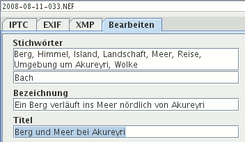
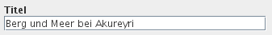
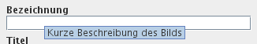
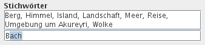
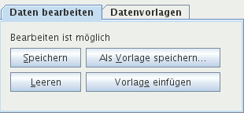
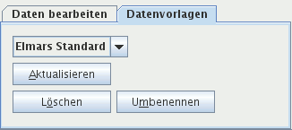

Über den Kartenreiter Bearbeiten können Sie die Metadaten eines oder mehrerer Bilder gleichzeitig bearbeiten. Sie benötigen:
Ohne Schreibrechte sind die Eingabefelder dunkler und es steht am Ende im Kartenreiter Bearbeiten, dass Bearbeiten nicht möglich ist.

Ihre Daten werden erst in die XMP-Filialdateien geschrieben, nachdem Sie diese speicherten! Tipp: Benutzen zum Speichern die Tastenkombination Alt+S. So können Sie schneller eingeben.

Mit der Tabulator-Taste gehen Sie von Eingabefeld zu Eingabefeld. Sofern nicht ausgeschaltet, wird Ihnen in jedem Eingabefeld Text vorgeschlagen, den Sie dort irgendwann einmal eingaben.

Zeigen Sie mit der Maus etwas länger auf die Überschrift eines Eingabefelds, erscheint ein Werkzeugtipp (Tooltip) mit weiteren Informationen, was in das Eingabefeld hineingeschrieben werden soll.
Folgende Daten können mehrfach vorkommen:

Ein Bereich mit mehrfachen Daten ist zweigeteilt: Oben ist eine Liste mit den bisherigen Eingaben, unten ein einzeiliges Eingabefeld.
Geben Sie Daten in das einzeilige Eingabefeld ein und drücken die Enter-Taste oder klicken mit der Maus auf die Plus-Schaltfläche (+), wird Ihre Eingabe in die Liste übernommen, falls sie dort nicht existiert.
Wollen Sie Einträge aus der Liste löschen, wählen Sie einen Eintrag oder mehrere an und drücken die Entf-Taste oder klicken auf die Minus-Schaltfläche (-).
Wählen Sie ein Bild aus, werden seine Metadaten angezeigt. Sie können diese verändern und abspeichern mit der Tastenkombination Alt+S oder Mausklick auf die Schaltfläche Speichern. Durch Entfernen aus den Eingabefeldern und Listen vor dem Abspeichern löschen Sie Daten.
Wählen Sie mehrere Bilder aus, werden keine Metadaten angezeigt. Daten, die Sie eingeben, werden in allen Bildern ersetzt, wenn sie nur einmal vorkommen, wie der Name des Fotografen, das Copyright, der Aufnahmeort. Eingaben in Felder mit sich wiederholenden Metadaten - Stichwörter und Kategorien - werden allen ausgewählten Bildern angehängt, sofern sie dort nicht existieren. Leer gelassene Eingabefelder werden nicht berücksichtigt. Die Daten werden in XMP-Filialdateien und in die Datenbank gespeichert, nachdem Sie die Tastenkombination Alt+S drückten oder mit der Maus auf die Schaltfläche Speichern klickten.
 
Vorlagen sind Metadaten, die Sie immer wieder benötigen. Einmal abgespeichert mit der Tastenkombination Alt+V oder Mausklick auf die Schaltfläche Als Vorlage speichern, werden sie in die Eingabefelder eingefügt durch die Tastenkombination Alt+E oder Klick auf die Schaltfläche Vorlage einfügen im Kartenreiter Bearbeiten. Der Name der aktuellen Vorlage wird angezeigt im Dropdown-Listenfeld des Kartenreiters Vorlagen.
Für eine Vorlage eignen sich besonders Copyright, Adresse des Fotografen und Stichwörter, die Sie immer wieder benutzen.
Sie können aus bestehenden Metadaten eine Vorlage erzeugen: Wählen Sie ein Bild aus, das alle wichtigen Metadaten enthält, entfernen alles aus den Eingabefeldern und Listen, was nicht in die Vorlage soll, und benutzen anschließend die Tastenkombination Alt+V oder klicken mit der Maus auf die Schaltfläche Als Vorlage speichern.
Die Bedeutung der anderen Schaltflächen, in den Klammern stehen die Tastenkombinationen:
(Alt+L)(Alt+A)(Alt+Ö)Alt+MDie Tastenkombinationen funktionieren nur, wenn der Kartenreiter mit den entsprechenden Schaltflächen ausgewählt ist.